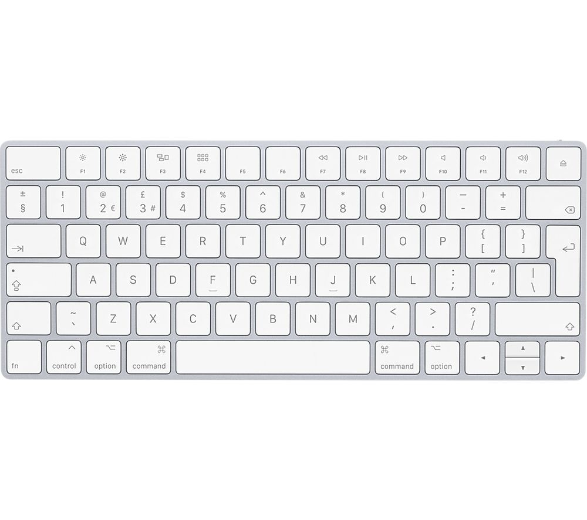

One of the earliset machines designed to assist people ind calculations was the abacus which still being used some 5000 years after its invention.
In 1642 Blaise Pascal (a famous French mathematician) invented an adding machine based on mechanial gears in which numbers were represented on the wheels.
Englishman, Charles Babbage, invented in the 1830's a "Difference Engine" made out of brass and pewter rods and gears, and also designed a further device which he called an "Analytical Engine". His design contained the five key characteristics of modern computers:-
Augusta Ada Brron (later Countess of Lovelace) was an associate of Babbage who has become known as the first computer programmer.
A central processing unit(CPU) is the electronic circuitrywithin acomputer that carries out the instructions of a computer program by performing the basic arithmetic, logic, controlling, and input/output(I/O)operations specified by the instructions. The computer industry has used the term "central prcoessing unit" at least since the early 1960s.
A computer keyboard is a typewriter-style device which uses an arrangement of buttons or keys to act as mechanical levels or electronic switches. Following the decline of punch cards and paper tape, interaction via teleprinter-style keyboards became the main input method for computers.Keyboard keys (buttons) typically have characters engraved or printed on them, [2] and each press of a key typically correspons to a single written symbol. However, producing some symbols may require pressing and holding several keys simultaneously or in sequence. While most keyboard keys produce letters, numbers or signs(characters), other keys or simultaneous key presses can produce actions or exectue computer commands. In normal usage, the keyboard is used as a text entry interface for typing text and numbers into a word processor, text editot or any other program. In a modern computer, the interpretation of key presses is generally left to the software. A computer keyboard distinguishes each physical key from every other key and reports all key presses to the controlling software.